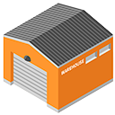

<mat-drawer-container [hasBackdrop]="true">
    <mat-drawer class="menu-conteiner" #drawer mode="over">
        <button (click)="goWorkSpace()">
            
            ПОИСК ПРОДУКЦИИ
        </button>
        <button (click)="openDocumentItems()">
            
            СПИСОК ПРОДУКЦИИ
        </button>
        <button>
            
            Основание
        </button>
        <button>
            
            DataMark
        </button>
        <button (click)="openAgreeDialog()">
            
            ЗАВЕРШИТЬ РАБОТУ
        </button>
        <button (click)="goBack()">
            
            Меню
        </button>
        <button (click)="goArticleHistory()">
            
            ДВИЖЕНИЕ ПО АРТИКУЛУ
        </button>
        <button (click)="goMiniMap()">
            
            СОДЕРЖИМОЕ ЯЧЕЙКИ
        </button>
    </mat-drawer>
    <div class="main">
        <nav class="navbar">
            <button (click)="drawer.toggle()">
                
            </button>
            <span>DataMark:</span>
            <span>{{sumCodes}}/{{sumCount}}</span>
        </nav>
        <div class="data-mark-input-conteiner">
            <mat-form-field appearance="outline">
                <mat-label>DataMark-коды</mat-label>
                <input matInput type="text" [(ngModel)]="gsm" id="barcodeInput">
            </mat-form-field>
            <button mat-raised-button (click)="addDataMark()" [disabled]="!selectedArticle || !gsm">
                Добавить код
            </button>
            <mat-form-field appearance="outline">
                <mat-label>Фильтр</mat-label>
                <input matInput type="text" [(ngModel)]="filter" (input)="inputFilter()">
            </mat-form-field>
        </div>
        <div class="data-mark-list-conteiner">
            <table *ngFor="let i of showingGSMCodes">
                <tr (click)="selectedArticle = i.codes.length< i.count? i.article: ''">
                    <td [ngClass]="selectedArticle == i.article ? 'selectedArticle' : ''" colspan="2">
                        {{i.article}}
                    </td>
                </tr>
                <tr (click)="selectedArticle = i.codes.length < i.count ? i.article: ''">
                    <td [ngClass]="selectedArticle == i.article ? 'selectedArticle' : ''">
                        <span [ngClass]="i.codes.length == i.count ? 'ready-gsm' : ''">
                            {{i.codes.length}}/{{i.count}}
                        </span>
                    </td>
                </tr>
                <tr>
                    <td colspan="2">
                        <table *ngFor="let d of i.codes">
                            <tr>
                                <td>
                                    {{d}}
                                </td>
                                <td>
                                    <button class="clear-button" mat-icon-button (click)="deleteDataMark(d)">
                                        <mat-icon>delete</mat-icon>
                                    </button>
                                </td>
                            </tr>
                        </table>
                    </td>
                </tr>
                <tr>
                    <td colspan="2">
                        <button class="clear-button" mat-raised-button (click)="openDeleteDialog(i.article) "
                            *ngIf="i.codes.length > 1" style="background-color: red; color: white; width: 100%;">
                            Удалить все коды артикула
                        </button>
                    </td>
                </tr>
            </table>
        </div>
    </div>
</mat-drawer-container>